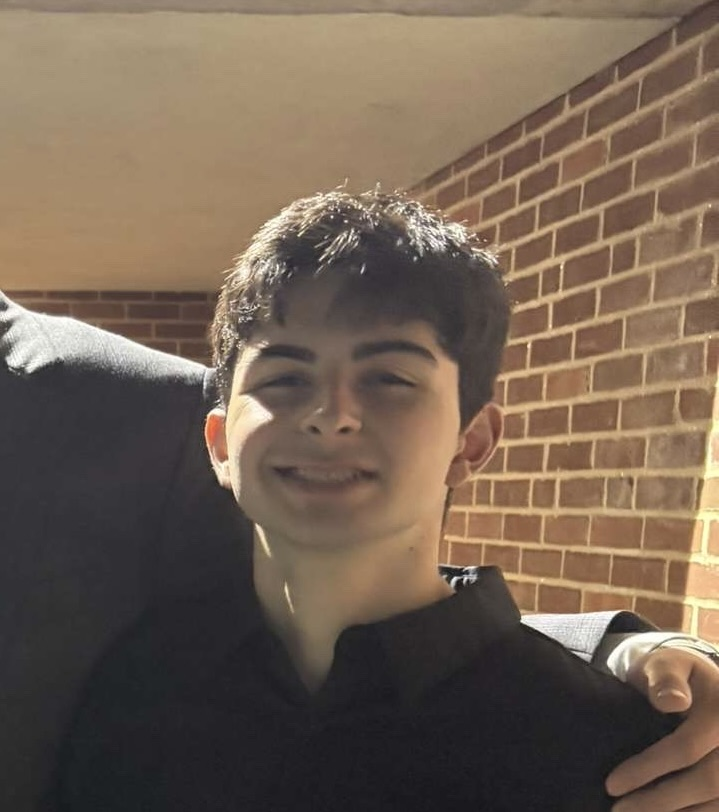
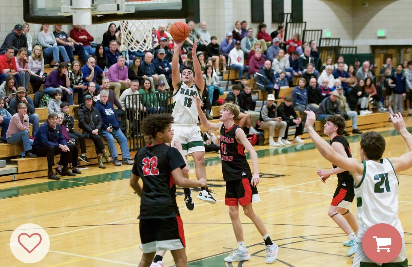

JM Basketball Tips

My name is James Molloy. Welcome to my basketball training website. Here, you can find information about how to improve at the game of basketball. Anything regarding improvement in the sport can be found below!
Instagram: jamesmolloy.1015
Email: James.Molloy@tufts.edu
Backstory
I have played basketball since the third grade. I started later
than most, and really didn't take it seriosuly until the 6th grade.
However, from this point on, I worked out at least 3-4 times a week until
my career ended in the 12th grade. Despite being one of the
shortest players on the floor, without freakish athleticism,
I was able to eventually lead my high school team in scoring my
Junior year, leading us to a Patriot League championship. In my
senior year, I was able to captain my high school team, and I
led my team to our first Division One Playoff win in 7 years. I
received an all-star and all-scholastic award both my Junior and
Senior Year. Now, my playing days are over, besides pickup games
and men's leagues. I still stay connected to the game through managing
the Tufts varsity team and playing at the club level.
However, I hope to transfer my knowledge to the next
generation of basketball players through training.

Proof that I Could Put the Ball in the Hoop!
Work Ethic
I was not always consistent in my work ethic, but before my Junior
and Senior year I worked out at least once, and usually twice a day,
six days a week. This was how I got better. The most important thing
with basketball is reps and hours. You will get as good as the time
you put into the game. Work Ethic is crucial. However, this work needs
to be intentional. This means you need to know why you are
working on what you are working on. It is more beneficial to work out for
1 hour with an intentional shooting workout than 3 hours
just shooting around without a purpose. Consistency is also key; a 3 hour workout
one day a week never beats a 45 minute workout every day. To summarize,
consistent and intentional training is the most important thing to becoming
a better basketball player.

Mentality
Mentality is key in the game of basketball. Whether you are playing
in front of a packed crowd, or whether you are in a gym, alone,
working out, your mentality determines the player you will become.
Different mentalities are necessary for different settings;
I will delve into each below.

-
One mentality is the same in all realms of the game: winning. You need to believe you will win each workout, each pickup game, and each chamionship. You need to be almost delusional, to the point that even when you have no chance of winning, you believe you will win. However, this belief needs to be backed and rooted in practice; everything you do needs to be aimed towards this goal. Different mentalities are required to win different settings, as seen below.
-
Let's start with off the court; the mentality off the court needs to be a mentality of consistency. Eating healthy, getting sleep, keeping grades up: you need to do the small, easy things consistently off the court to win on the court. Ways to achieve this can be making to-do lists, or setting goals for what you want to do every day. For example, you could always try to get 2 workouts in a day, or you could follow a bulking or cutting diet.
-
When working out, your mindset needs to be focused on growth. You need to be a sponge, that does everything in it's power to absorb knowledge. Being a learner is crucial to improvement. Those who put maximum effort into perfecting the techniques of basketball will improve much faster than other players. Additionally, you need to put maximum effort into every single rep. You need to actually put the work in, like you are in a game, every time you work on a skill. I feel that this mindset is truly detrimental to not have... you can lack in the other mindsets and still be a very good player if you have this one down, because this mindset is the one that gives you the tools and skills to succeed in games.
-
Now, onto the games. You need to be a tiger. When tigers hunt their prey, they are calm and controlled. However, at the same time, they are hell-bent on succeeding in securing their next meal. On the court, you cannot be nervous, and in this sense you must be calm and controlled. However, you cannot be lazy; you must be obsessed with winning, to the point that you will give every last bit of your energy to succeed. Every great basketball player has had this tiger-like trait. You need to hate losing, and do every possible thing to win the game. As you can see, different mentalities are necessary for different realms of basketball, but they are all based around the concept of having a winner's mentality.
Winning
Off the Court
Working Out
Games
Planning your Workouts and Playing for Teams
When it comes to figuring out how to get better at basketball,
it mainly comes down to what has been listed above: what team you
play for, and how you schedule your workouts. The most important
of the two is your training, or workouts. I recommend that at least
30 to 45 minutes is spent on shooting, and 45 minutes is spent on conditioning,
ball-handling, and finishing, each day. Additionally, as you get older (high school),
strength training becomes a huge part of basketball, and working in an hour
lift at least 3 times a week is huge to see development as an athlete. Before high school,
pushups, pullups, mini-hoop dunking(max-intent jumping), and situps
nightly should get the job done (5 - 15 minutes). When choosing to play for teams,
a no-brainer should be to play both recreational and travel basketball in the winter.
In the fall/spring, AAU is helpful, but traveling excessively drains paychecks and wastes hours
of time; this is why I recommend finding a team that does not travel long distances,
unless you are older than 9th grade, where college recruitment becomes a factor.
Over the summer, camps and summer leagues are fantastic ways to play and improve.
Specific Training Regimen
There is so much to teach about specific skills for the game of
basketball. Simply put, there is too much to put on this page. I
plan on inserting some of my workouts here in the future, but nothing beats
real life teaching. This is why, if you want specific tips on
specific skills and workouts, I encourage you to contact
me and we can figure out a way to
train. I charge low rates of only 35 dollars per hour, and
just one training session can truly take your skills to the next level.